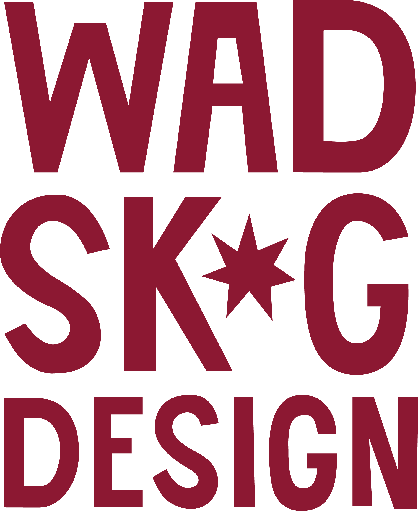
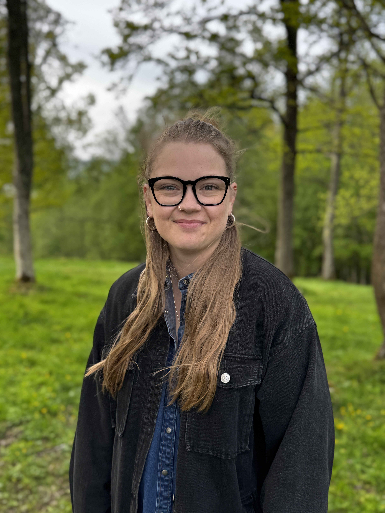

Hej! Det är jag som är Alma. Jag drivs av att skapa vackra, funktionella kläder och inredningsdetaljer med så lite klimatavtryck som möjligt. Därför arbetar jag främst med handplockade kvalitetstyger från second hand, eller genom att ge gamla plagg helt nytt liv genom redesign.
Oavsett om du vill sy om ett favoritplagg som tappat formen, måttbeställa nya gardiner till hemmet, eller lägga upp ett par kostymbyxor så hjälper jag dig att få det precis som du vill ha det.
Här är ett urval av vad som har skapats i studion. Allt ifrån upcyklade kläder till unika accessoarer.
Här hittar du cirkapriser för de vanligaste ändringarna och beställningarna. Kontakta mig alltid för ett exakt prisförslag för ditt projekt.
| Tjänst | Pris (från) |
|---|---|
| Lägga upp Jeans / Kostymbyxor | 250 kr |
| Sy Gardiner (per längd) | 300 kr |
| Mindre lagningar (t.ex. trasig söm/ficka) | 150 kr |
| Byta dragkedja (exkl. material) | 350 kr |
| Redesign / Anpassning av plagg | Timpris / Offereras |
| Måttsydda kläder efter mönster | Offereras |
* Priserna kan variera beroende på tygets komplexitet och tidsåtgång.
För att se de senaste projekten, processen bakom kulisserna och plaggen som är till salu just nu – spana in mitt flöde!
@wadskogdesignKontakta mig, Alma, så bollar vi dina idéer!
E-post: